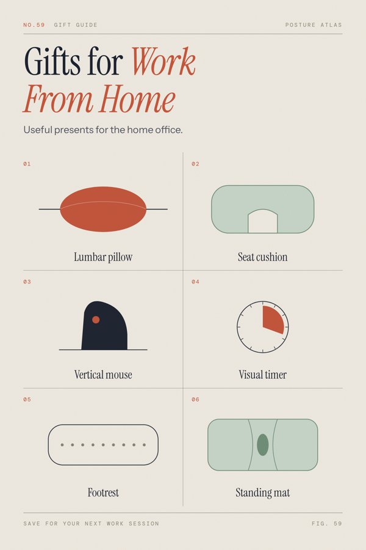

Useful presents for the home office.
Memory-foam pillow that straps to the chair and fills the gap behind your lower back.
See it on AmazonFirm memory-foam cushion; raises a low chair and takes pressure off a hard seat.
See it on AmazonVertical mouse that holds your hand in a handshake position instead of palm-down.
See it on AmazonVisual desk timer, handy for breaks or sit-stand switches without checking your phone.
See it on AmazonAngled under-desk footrest for when your feet don't sit flat on the floor.
See it on AmazonContoured anti-fatigue mat that gives you places to shift your feet while standing.
See it on Amazon